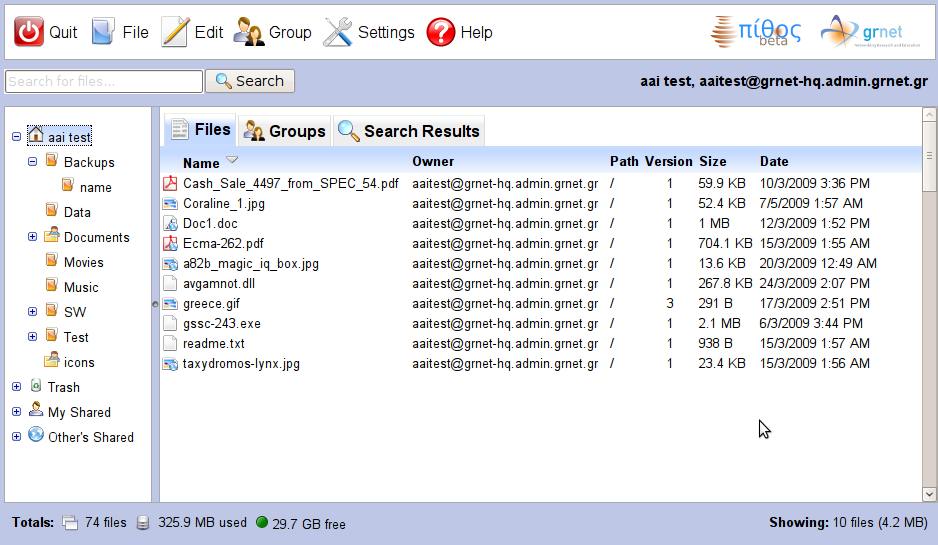
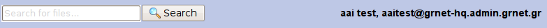
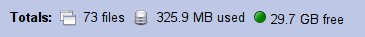
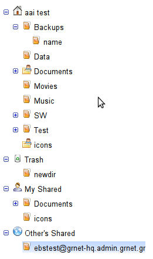
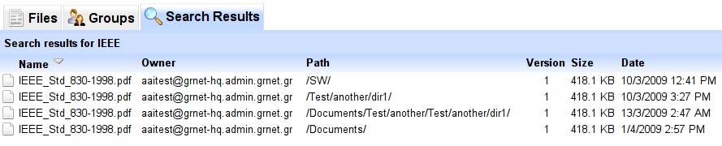

Περιγραφή Βασικών Στοιχείων Οθόνης
Η παρακάτω εικόνα δείχνει ένα παράδειγμα της οθόνης της υπηρεσίας Pithos. Στο συγκεκριμένο παράδειγμα ο χρήστης έχει δημιουργήσει αρχεία και καταλόγους, ενώ έχει δώσει δικαιώματα πρόσβασης άλλων χρηστών σε καταλόγους και αρχεία του.

Μενού Επιλογών και Στοιχεία Χρήστη
Στο πάνω τμήμα της οθόνης βρίσκεται το μενού επιλογών με τα εξής:
- Quit: Έξοδος-Logout από το σύστημα. Το σύστημα ζητάει επιβεβαίωση και "αποσυνδέει" τον χρήστη.
- File: Μενού επιλογών βασικής διαχείρισης αρχείων και καταλόγων (οι λειτουργίες διαχείρισης αρχείων και καταλόγων περιγράφονται με λεπτομέρειες εδώ και εδώ αντίστοιχα):
- New Folder: δημιουργία νέου καταλόγου κάτω από τον επιλεγμένο κατάλογο. Ο χρήστης ορίζει το όνομα του καταλόγου μέσω του διαλόγου που εμφανίζεται.
- Upload: δημιουργία νέου αρχείου στον επιλεγμένο κατάλογο. Το σύστημα εμφανίζει διάλογο μέσω του οποίου ο χρήστης επιλέγει και "στέλνει" το νέο αρχείο. Κατά τη διάρκεια αποστολής του αρχείου στο Pithos, ο διάλογος εμφανίζει progress bar και εκτίμηση χρόνου ολοκλήρωσης.
- Download: (εμφανίζεται μόνο αν έχει επιλεγεί αρχείο) "κατεβάζει" το επιλεγμένο αρχείο στον browser/υπολογιστή του χρήστη.
- Empty Trash: "αδειάζει" το trash bin του χρήστη (διαγράφει μόνιμα τα αρχεία που περιέχει).
- Refresh: ανανεώνει τα περιεχόμενα του τρέχοντος καταλόγου ζητώντας τα εκ νέου από το server.
- Sharing: εμφανίζει το διάλογο με τα στοιχεία του επιλεγμένου αρχείου ανοίγοντας το tab με τα δικαιώματα πρόσβασης.
- Properties: (δεν είναι διαθέσιμη αν έχουν επιλεγεί πολλαπλά αρχεία) εμφανίζει διάλογο με τα στοιχεία του επιλεγμένου αρχείου ή καταλόγου. Από το διάλογο αυτό μπορεί να τροποποιηθεί το όνομα αρχείου/καταλόγου, να διαχειριστούν τα δικαιώματα πρόσβασης σε αρχεία/καταλόγους, να οριστούν tags στο αρχείο, να διαχειριστούν οι εκδόσεις του αρχείου και να ενημερωθεί ο χρήστης για το URI του αρχείου (για απευθείας web access για public αρχεία).
- Edit: Μενού επιλογών αντιγραφής/μεταφοράς/διαγραφής αρχείων και καταλόγων:
- Cut: ετοιμάζει για μεταφορά το επιλεγμένο αρχείο ή κατάλογο ή τα επιλεγμένα αρχεία.
- Copy: ετοιμάζει για αντιγραφή το επιλεγμένο αρχείο ή κατάλογο ή τα επιλεγμένα αρχεία.
- Paste: μεταφορά/αντιγραφή του επιλεγμένου αρχείου ή καταλόγου ή των επιλεγμένων αρχείων.
- Move to Trash: προσωρινή διαγραφή (μεταφορά στο trash) του επιλεγμένου αρχείου ή καταλόγου ή των επιλεγμένων αρχείων.
- Delete: οριστική διαγραφή του επιλεγμένου αρχείου ή καταλόγου ή των επιλεγμένων αρχείων.
- Select All: επιλογή όλων των αρχείων στον κατάλογο.
- Unselect All: ακύρωση επιλογής όλων των επιλεγμένων αρχείων στον κατάλογο.
- Group: Επιτρέπει τη δημιουργία ομάδων χρηστών που χρησιμοποιεί ο χρήστης για ταχύτερη διαχείριση δικαιωμάτων πρόσβασης άλλων χρηστών στα αρχεία και τους καταλόγους του. Περισσότερα περιγράφονται εδώ.
- Settings: Διαχείριση ρυθμίσεων. Προς το παρόν μια επιλογή είναι διαθέσιμη:
- Show Credentials: Εμφανίζονται το username και το ισχύον token (περιορισμένος χρόνος ισχύς) για το χρήστη. Τα στοιχεία αυτά χρησιμοποιούνται άμεσα από το χρήστη για τη σύνδεση με το Pithos μέσω WebDAV. Είναι εύαισθητη πληροφορία που δεν πρέπει να κοινοποιείται από το χρήστη σε κανένα!
- Help: Βοήθεια (αυτές οι οθόνες!) και άλλες πληροφορίες
Αναζήτηση και Γενικές Πηροφορίες
Κάτω από τη μπάρα επιλογών υπάρχει το πεδίο αναζήτησης και τα στοιχεία του χρήστη.

Το πεδίο αναζήτησης επιτρέπει την αναζήτηση ελεύθερου κειμένου σε τίτλους, περιεχόμενα και tags των αρχείων που ο χρήστης έχει πρόσβαση ανάγνωσης. Περισσότερα για την αναζήτηση περιγράφονται εδώ.
Δεξιά από το πεδίο αναζήτησης, εμφανίζεται το όνομα και το username (eduPerson principal name) του χρήστη. Το username χρησιμοποιείται για τον ορισμό ομάδων χρηστών και δικαιωμάτων πρόσβασης (μοίρασμα αρχείων και καταλόγων).
Στο κάτω μέρος της οθόνης, το σύστημα εμφανίζει στοιχεία χρήσης του συστήματος από τον χρήστη:

- Συνολικός αριθμός αρχείων στον προσωπικό χώρο του χρήστη (και αυτά που είναι στο trash)
- Συνολικό μέγεθος αρχείων (υπολογίζονται όλες οι εκδόσεις αρχείων και τα αρχεία στο trash)
- Ελεύθερος χώρος για αποθήκευση νέων αρχείων ή νέων εκδόσεων αρχείων για το χρήστη
Ιεραρχία Καταλόγων Χρήστη
 Η αριστερή πλευρά του υπόλοιπου μέρους της οθόνης καταλαμβάνεται από την ιεραρχική (δενδρική) δομή με τους καταλόγους αρχείων που είναι διαθέσιμη στον χρήστη. Εμφανίζονται τρεις ιεραρχίες καταλόγων:
- Ο προσωπικός κατάλογος του χρήστη (ο οποίος εμφανίζεται με το όνομα του χρήστη, π.χ. στο παράδειγμα του screen shot είναι aai test). Σε αυτόν περιέχονται αρχεία και υποκατάλογοι (χωρίς περιορισμό βάθους δέντρου). Όλα αυτά τα αρχεία βρίσκονται "μέσα" στον προσωπικό χώρο και χρεώνονται στο όριο αποθήκευσης του χρήστη. Κάποια από αυτά είναι πιθανό να έχουν δημιουργηθεί από άλλους χρήστες στους οποίου δόθηκαν από το χρήστη τα κατάλληλα δικαιώματα πρόσβασης. Στο χώρο αυτό εμφανίζεται και το Trash που έχει τη μορφή καταλόγου αρχείων (χωρίς να επιτρέπεται η διαγραφή/μεταφορά/αντιγραφή του ή η δημιουργία αρχείων ή καταλόγων σε αυτό).
- Τα αρχεία που μοιράζει ο χρήστης σε άλλους χρήστες, κάτω από τον τίτλο "My Shared". Εδώ εμφανίζονται κατάλογοι και αρχεία που βρίσκονται στν προσωπικό χώρο του χρήστη και είναι διαθέσιμα για ανάγνωση ή και τροποποίση από ένα ή περισσότερους άλλους χρήστες, ή επιτρέπουν public (unauthenticated) access. Τα αρχεία και οι κατάλογοι που εμφανίζονται εδώ, εμφανίζονται και στον προσωπικό κατάλογο του χρήστη. Το "My Shared" απλά συγκεντρώνει όλα αυτά τα "μοιραζόμενα" αρχεία και καταλόγους του χρήστη σε ένα σημείο για (α) ευκολότερη εποπτεία και (β) άμεση πρόσβαση.
- Τα αρχεία και οι κατάλογοι άλλων χρηστών στα οποία έχει δοθεί πρόσβαση στο χρήστη, κάτω από τον τίτλο "Other's Shared". Τα αρχεία και οι κατάλογοι εμφανίζονται κάτω από τους κωδικούς (usernames) των χρηστών που ανήκουν. Δηλαδή στο πρώτο επίπεδο ιεραρχίας κάτω από τον κόμβο "Other's Shared" ο χρήστης βλέπει όλα τα usernames που έχουν αρχεία ή καταλόγους με κάποιο δικαίωματα πρόσβασης για τον χρήστη. Η συμπεριφορά των στοιχείων αυτών (αρχείων ή καταλόγων) είναι όμοια με αυτή των στοιχείων στον προσωπικό χώρο του χρήστη (ανάλογα φυσικά με τα εκάστοτε δικαιώματα του χρήστη στο στοιχείο).
Η επιλογή καταλόγου γίνεται με left mouse click. Επίσης, τα μενού επιλογών και το context menu (right mouse click σε κατάλογο) επιτρέπουν διάφορες λειτουργίες διαχείρισης των καταλόγων της λίστας - λεπτομέρειες περιγράφονται εδώ.
Λίστα Αρχείων Επιλεγμένου Καταλόγου
 Στα δεξιά της ιεραρχίας καταλόγων υπάρχουν τρια tabs, το πρώτο με τίτλο "Files" εμφανίζει τη λίστα αρχείων χρήστη για τον επιλεγμένο κατάλογο.
Η λίστα εμφανίζει τα αρχεία που περιέχονται στον επιλεγμένο κατάλογο χρήστη ή κατάλογο μοιρασμένο από άλλο χρήστη, για τα οποία υπάρχουν τα κατάλληλα
δικαιώματα πρόσβασης (κατ' ελάχιστον δικαίωμα "read"). Η λίστα εμφανίζει τις εξής στήλες με πληροφορίες για κάθε αρχείο:
Στα δεξιά της ιεραρχίας καταλόγων υπάρχουν τρια tabs, το πρώτο με τίτλο "Files" εμφανίζει τη λίστα αρχείων χρήστη για τον επιλεγμένο κατάλογο.
Η λίστα εμφανίζει τα αρχεία που περιέχονται στον επιλεγμένο κατάλογο χρήστη ή κατάλογο μοιρασμένο από άλλο χρήστη, για τα οποία υπάρχουν τα κατάλληλα
δικαιώματα πρόσβασης (κατ' ελάχιστον δικαίωμα "read"). Η λίστα εμφανίζει τις εξής στήλες με πληροφορίες για κάθε αρχείο:
- Name: Το όνομα του αρχείου
- Owner: Ο χρήστης στου οποίου τον προσωπικό χώρο είναι αποθηκευμένο το αρχείο
- Path: Το πλήρες μονοπάτι καταλόγων στον προσωπικό χώρο του χρήστη που βρίσκεται το αρχείο
- Version: Τελευταία έκδοση του αρχείου - αύξων αριθμός (στα αρχεία που δεν έχει ενεργοποιηθεί η τήρηση εκδόσεων είναι πάντα 1)
- Size: Μέγεθος του αρχείου (το μέγεθος της τελευταίας έκδοσης
- Date: Ημερομηνία δημιουργίας του αρχείου
Ομάδες Χρηστών
 Το δεύτερο tab του δεξιού τμήματος της οθόνης με τίτλο "Groups" επιτρέπει την εποπτεία και διαχείριση ad hoc ομάδων χρηστών.
Οι ομάδες αυτές είναι προσωπικές και ενώ εμφανίζονται σε άλλους χρήστες, δεν εμφανίζονται οι χρήστες που περιέχονται σε αυτά.
Λειτουργούν ως βοήθημα για το γρήγορο ορισμό δικαιωμάτων πρόσβασης άλλων χρηστών σε αρχεία του χρήστη.
Το δεύτερο tab του δεξιού τμήματος της οθόνης με τίτλο "Groups" επιτρέπει την εποπτεία και διαχείριση ad hoc ομάδων χρηστών.
Οι ομάδες αυτές είναι προσωπικές και ενώ εμφανίζονται σε άλλους χρήστες, δεν εμφανίζονται οι χρήστες που περιέχονται σε αυτά.
Λειτουργούν ως βοήθημα για το γρήγορο ορισμό δικαιωμάτων πρόσβασης άλλων χρηστών σε αρχεία του χρήστη.
Στο tab "Groups" εμφανίζεται λίστα με τις ομάδες που έχει ορίσει ο χρήστης. Κάθε ομάδα μπορεί να έχει απεριόριστα μέλη, τα οποία εμφανίζονται ή κρύβονται με τις σχετικές επιλογές ([+], [-]) αριστερά από το όνομα της ομάδας. Η διαχείριση των ομάδων και των μελών (προσθήκη, διαγραφή) γίνεται μέσω του μενού Group και του context menu (right mouse click).
Περισσότερα για τις σχετικές λειτουργίες μοιράσματος αρχείων δίνονται εδώ.
Αποτελέσματα Αναζήτησης
Το τελευταίο tab με τίτλο "Search Results" εμφανίζει τα τελευταία αποτελέσματα της αναζήτησης. Η λίστα είναι όμοια με τη λίστα του tab "Files". Η συμπεριφορά και οι επιλογές είναι όμοιες με το tab "Files". Και στις δυο περιπτώσεις φυσικά, οι διαθέσιμες λειτουργίες επηρεάζονται από τα δικαιώματα που έχει ο χρήστης στο αρχείο (η εμφάνιση του αρχείου στη λίστα σημαίνει τουλάχιστον δικαίωμα "read").

Περισσότερα για την αναζήτηση περιγράφονται εδώ.